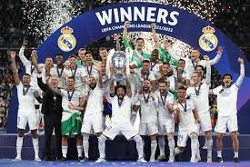
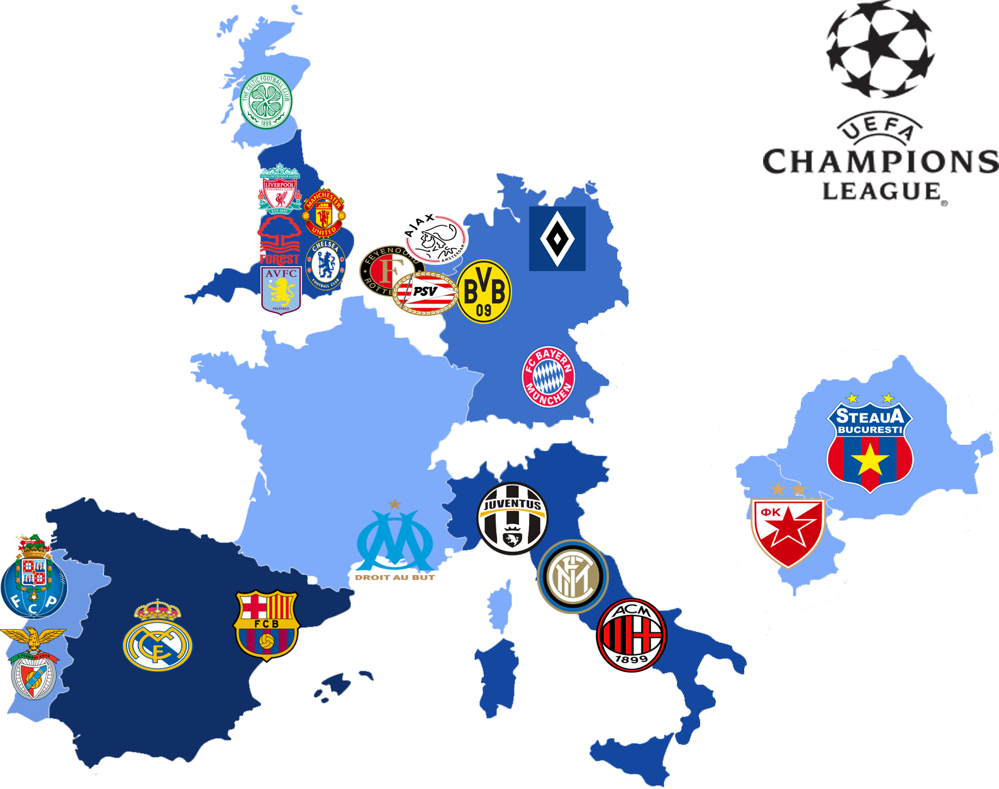

Considerada o torneio de clubes mais prestigiado do mundo, a pesquisa foi explorada com ênfase em sua história e momentos memoráveis. Desde sua criação em 1955, a competição reúne os maiores clubes da Europa, proporcionando partidas inesquecíveis e grandes rivalidades. Foram discutidos recordes, lendas do futebol que marcaram o torneio, como Cristiano Ronaldo e Lionel Messi, e mudanças recentes no formato da competição, que prometem torná-la ainda mais emocionante e competitiva.

O primeiro gol da história da Champions League foi marcado por João Baptista Martins, do Sporting de Portugal, em 1955.
O Real Madrid é o maior vencedor, com 15 títulos até 2024, sendo o único clube a conquistar cinco edições consecutivas (1956–1960).
Cristiano Ronaldo marcou 17 gols na edição 2013-2014, o recorde de gols em uma única temporada do torneio.
Cristiano Ronaldo lidera com 140 gols no total, mantendo-se como o maior goleador da história da competição.
.jpg)
O Liverpool protagonizou uma das maiores viradas da história, ao empatar com o Milan após estar perdendo por 3-0, e vencer nos pênaltis. Esse jogo é lembrado como o “Milagre de Istambul”.
O voleio de Zinedine Zidane na final contra o Bayer Leverkusen é considerado um dos gols mais belos da história do torneio.
Em 2014, o Real Madrid conquistou sua décima Champions, em uma dramática vitória na prorrogação sobre o Atlético de Madrid.
A partir das futuras edições, a Champions League adotará um formato de pontos corridos na fase inicial. Os times não serão divididos em grupos, mas jogarão contra diferentes adversários, acumulando pontos como em ligas nacionais.
Cada equipe jogará várias partidas contra times de diferentes potes. Os clubes somarão pontos, e os melhores classificados avançarão para as eliminatórias.
Após a fase de liga, as equipes disputarão a fase eliminatória tradicional, até a final, em jogo único. Essa mudança aumentará o número de confrontos entre grandes clubes e promete oferecer mais emoção e desafios ao longo da competição.
Cristiano Ronaldo, com 17 gols (2013-14).
Cristiano Ronaldo detém o recorde de assistências, com 42 assistências ao longo de sua carreira na competição.
Paco Gento é o primeiro a atingir 6 títulos, todos pelo Real Madrid nas décadas de 1950 e 1960. Mais recentemente, Dani Carvajal, Luka Modric, Toni Kroos e Nacho também alcançaram essa marca com 6 títulos cada, fazendo parte da era de ouro moderna do Real Madrid.
O Real Madrid, com 17 finais disputadas, das quais venceu 15.
Maior artilheiro e recordista em assistências, além de ser um dos maiores ícones do torneio, com 5 títulos.
Protagonista de várias edições, com 4 títulos e momentos de brilho inesquecíveis, como o gol na final de 2009 contra o Manchester United.
Como jogador, foi o herói da final de 2002, e como treinador, levou o Real Madrid a três títulos consecutivos (2016, 2017, 2018).
Os "Red Devils" venceram o Bayern de Munique por 2-1, com dois gols nos acréscimos, conquistando o título de maneira dramática.
O Liverpool fez uma virada histórica contra o Milan, após estar perdendo por 3-0, empatando e vencendo nos pênaltis.
O Real Madrid venceu o Liverpool por 1-0 na final, com uma atuação brilhante do goleiro Thibaut Courtois, garantindo seu 14º título europeu.
Durante a década de 1950, quando o Real Madrid começou a dominar o futebol europeu, a Espanha vivia sob a ditadura de Francisco Franco. Embora não existam provas definitivas de uma interferência direta do regime nos títulos europeus do clube, acredita-se que o governo franquista utilizou o sucesso do Real Madrid como uma ferramenta de propaganda para melhorar a imagem do país no exterior. O clube tornou-se um símbolo do poder espanhol, com o Estádio Santiago Bernabéu servindo como palco de grandes eventos internacionais que reforçavam o prestígio do regime.
A Champions League é considerada o torneio de clubes mais importante do mundo. Ele não apenas representa o auge do futebol europeu, mas também atrai uma audiência global, gerando milhões em receitas e impulsionando o futebol em todos os continentes. A competição é uma vitrine para os maiores talentos do futebol, promovendo confrontos épicos entre os melhores clubes e jogadores do mundo.